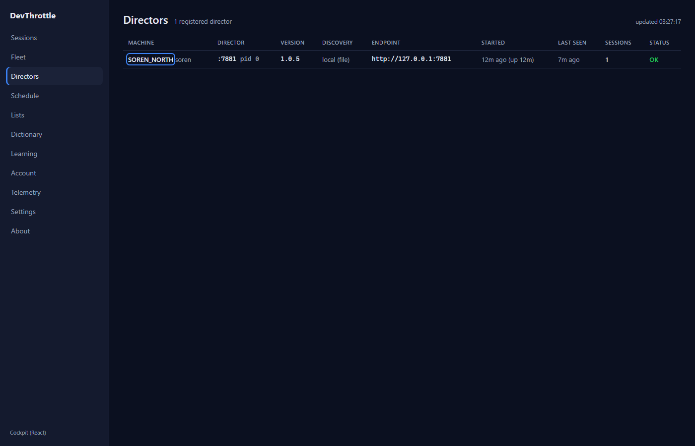
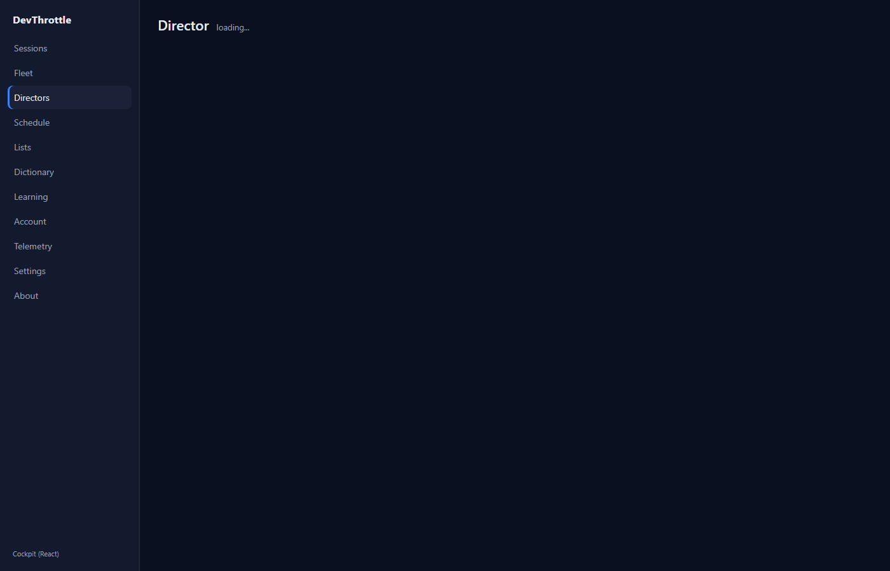
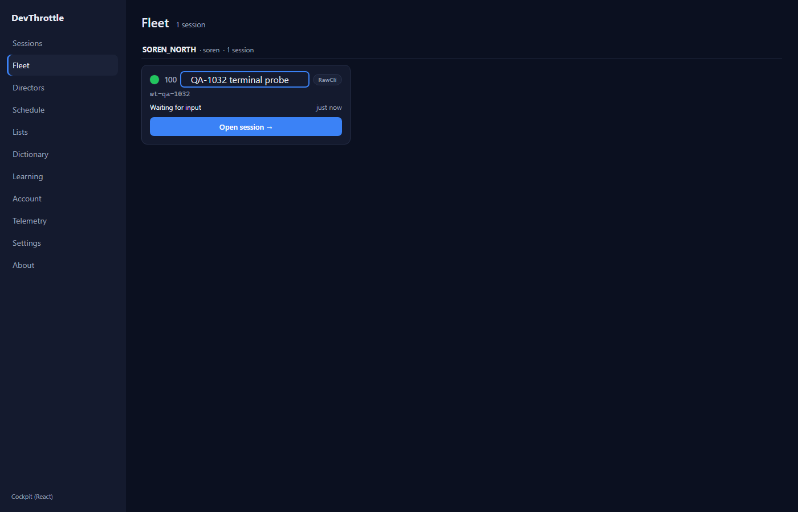
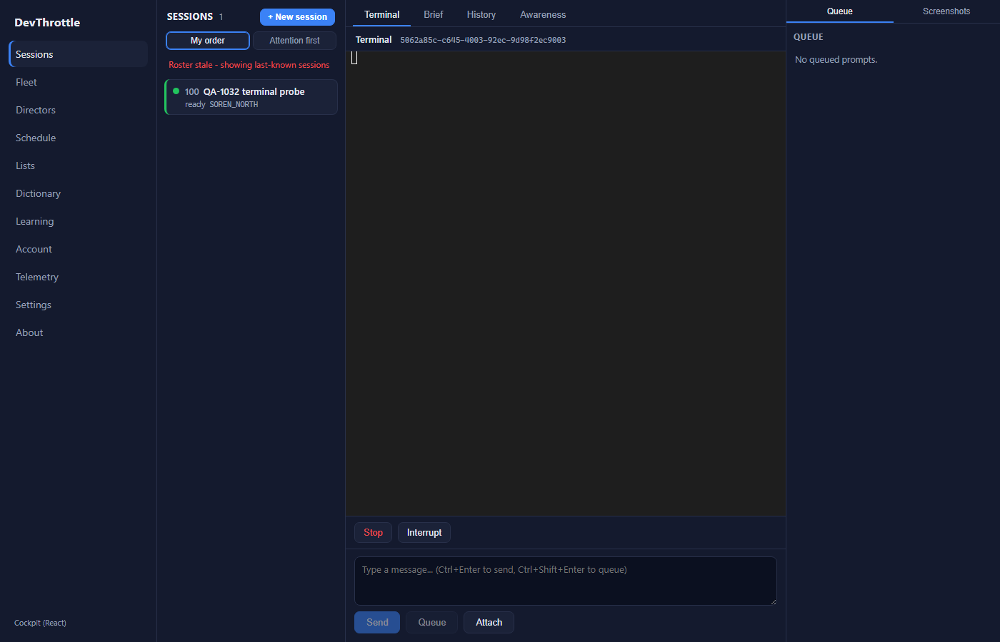
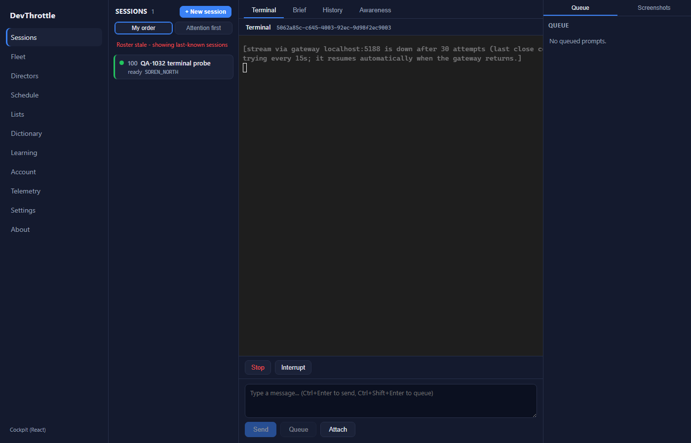
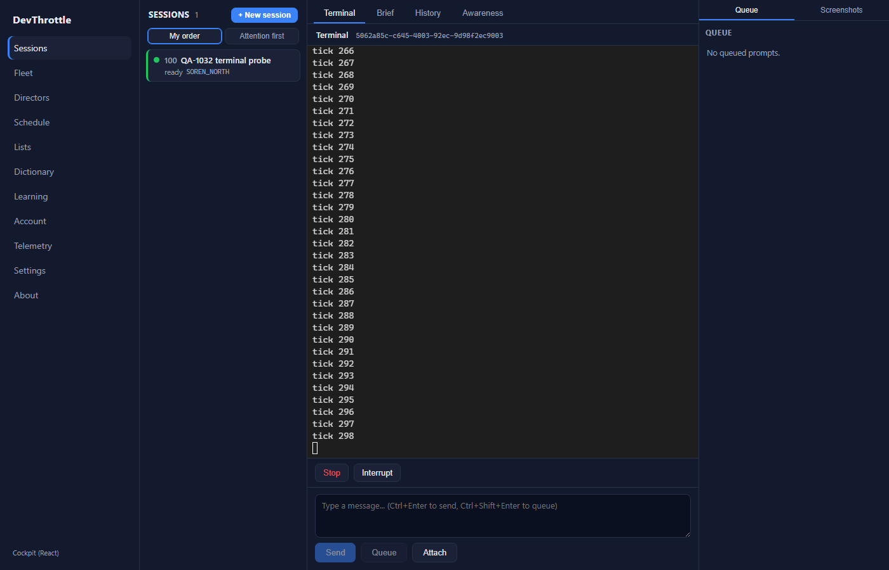

QA built the PR branch in its own detached worktree, launched its own isolated Director on
slot 15 (Control API port 7881) via the per-session isolation harness, and created a live
streaming RawCli session (a cmd.exe tick loop) so the terminal had a real PTY stream.
The real Cockpit was served by vite with COCKPIT_PROXY_TARGET pointed at a small
local front proxy that fronts the bare Director as a Gateway (synthesizing only GET /directors and
GET /sessions?envelope=true, passing the rename PATCH and the /sessions/<id>/stream
WebSocket straight through to the Director). Stopping that proxy simulates a Gateway outage while the Director
stays up on a stable port; restarting it restores the Gateway. All keyboard actions and status checks were
driven and read by Playwright in real Chromium. Nothing from the developer's report was reused.
| Check | Expected | Actual | Verdict |
|---|---|---|---|
| Directors row reachable by keyboard | Tab reaches the machine-name control | Reached in 9 Tab presses; document.activeElement is <a class="dcell-namelink"> | PASS |
| Visible focus ring on the row link | Focus ring visible for keyboard focus | :focus-visible matched; computed outline solid 2px rgb(59,130,246) (accent) | PASS |
| Enter opens Director detail, no reload | Enter navigates to /directors/<id> client-side | URL became /directors/2fa3ddd1-...; in-page marker persisted (no full reload) | PASS |
| Fleet rename reachable by keyboard | Tab reaches the rename control | Reached in 10 Tab presses; activeElement is <button class="fleet-cardtitle-btn"> | PASS |
| Visible focus ring on rename button | Focus ring visible for keyboard focus | :focus-visible matched; computed outline solid 2px rgb(59,130,246) | PASS |
| Enter AND Space operate the rename button | Either key opens the inline rename input | Enter opened autofocused input.fleet-name-edit; Space also opened it; no full reload | PASS |
Directors row - keyboard focus ring on the machine name:

Enter navigated to the Director detail (client-side, no reload):

Fleet rename button - keyboard focus ring:

Enter opened the inline rename input:
| Step | Expected | Actual | Verdict |
|---|---|---|---|
| Baseline | Terminal connected and streaming | Live tick N output flowing | PASS |
| Outage - fast phase | Fast reconnect status shown | "stream lost, reconnecting via gateway ... (attempt N)..." displayed | PASS |
| Past the ~36s cap | Drops to a slow keepalive probe, announced once, does NOT give up | After 36.5s outage: "is down after 30 attempts (last close code 1006) - now retrying every 15s; it resumes automatically when the gateway returns." | PASS |
| Gateway returns | Terminal resumes on its own, no reload / no re-selection | Slow probe reconnected 14.2s after restore; fresh tick output resumed; in-page marker persisted (no reload) | PASS |
Connected / streaming (baseline):
Fast reconnecting during the outage:

Slow keepalive probe announced after the cap (does not give up):

Auto-resumed on its own after the Gateway returned (fresh ticks, no reload):

| Gate | Command | Result | Verdict |
|---|---|---|---|
| Cockpit build | npm run build (tsc --noEmit + vite build) | Built OK, 108 modules transformed | PASS |
| Lint | npm run lint (eslint .) | Exit 0, no findings | PASS |
| Terminal unit tests | vitest run interactive.test.ts | 14 passed (incl. the new slow-keepalive test) | PASS |
| Gateway + cockpit MSBuild | dotnet build CcDirector.Gateway -p:RunCockpitBuild=true | Build succeeded, 0 Warning(s) 0 Error(s) | PASS |
| Full solution | dotnet build cc-director.sln | Build succeeded, 0 Warning(s) 0 Error(s) | PASS |
docs/cencon/ update is required. No blocking DT rule affected.onClick is preserved for mouse users; the in-row Link uses stopPropagation to avoid a double navigate.VERIFIED - all acceptance criteria met